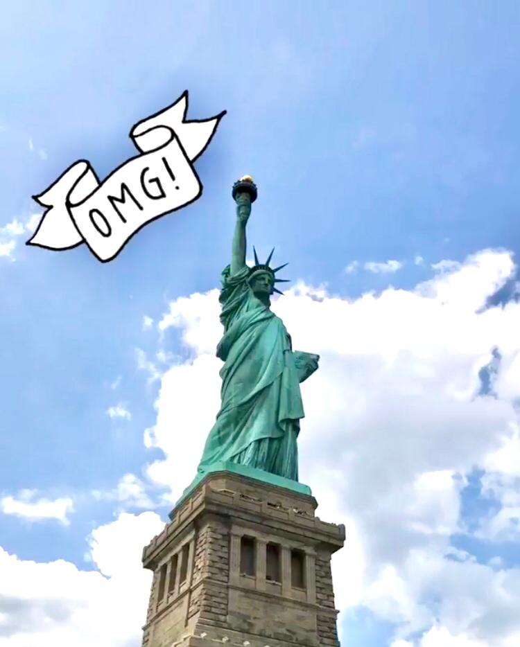

Hi, I'm Meriem 🥰 Nice to meet you!

Hi, I am Meriem, an 18 year old student at ESSEC Business School. I used to live in Morocco and now I live here in France. I love cinema, fashion and art, but also, spending time with my family and friends. One thing about me, I am a hopeless fan of documentaries and sci-fi movies 😉
Check out my Linked'in profil right below!
Meriem's Linked'in profile🎥Cinema🎥
I have always loved cinema. Eversince I can remember, I was always watching movies. I became a huge fan of the culture surrounding the world of cinematography, especially international cinema. I love watching the ceremonies for the different movie festivals around the world, such as The festival of Cannes or the Academy Awards.
I have an instagram page for movies and cinema. Check it out!
My instagram page for movies😉📷Photography and montages📷
Photography has been one of my passions for a long time. Creating pieces of art is a feeling that I find very rewarding and self-motivating. Since I am a sucker for cinema, I love making short films and montages. It helps me dive entirely into my passion.
📚Reading📚
Reading has been a part of my life since my childhood. Growing up, I loved reading classical novels, like novels from Jane Austen. Another thing, I love learning about history and documenting myself on impactful historical moments, like events that happened in history that have left a huge impact on our society today.
👠FashionğŸ‘
I am a huge fan of fashion and clothes. I love trying on new trends and styles and reading about fashion icons. One thing that I also love is finding vintage pieces of clothing that I think are very cute and redesigning them to make them at my taste. I would love to learn to sew in the future.
I love reading blogs about fashion. Thses are my two biggest inspiration in Fashion:
BestDressed MyBetterSelf🌎Travel✈️
I love traveling and discovering the world. I have traveled to Spain, the USA and to the Netherlands in the past and I have to say that these travels have been unforgettable experiences that I will always look back to. I look forward to discovering new countries and cities in the future.
This is a picture I took when I went to New-York City back in 2018:
